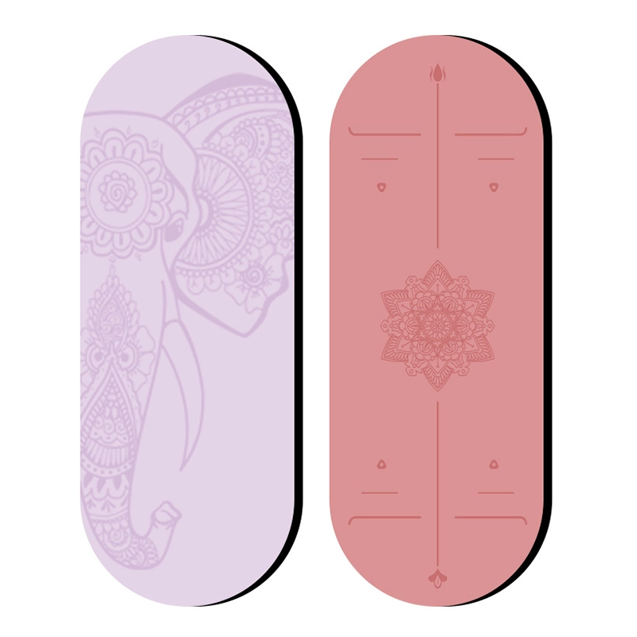
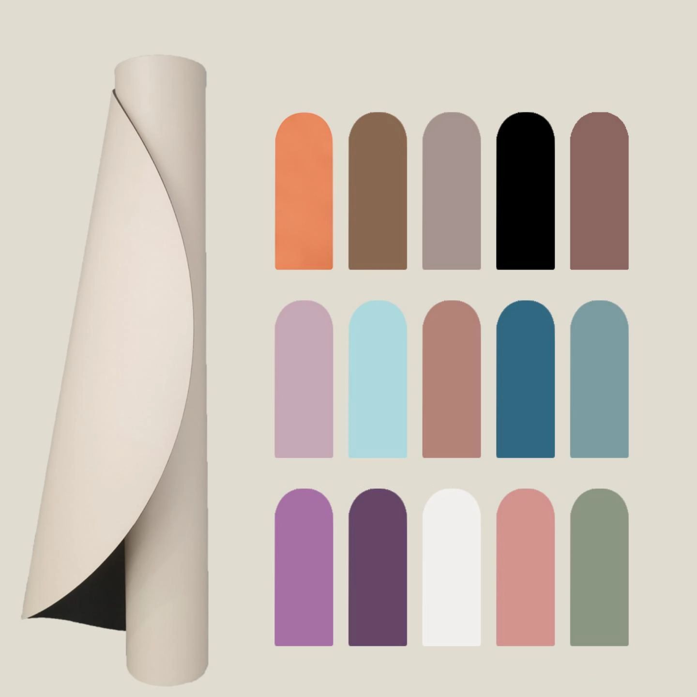
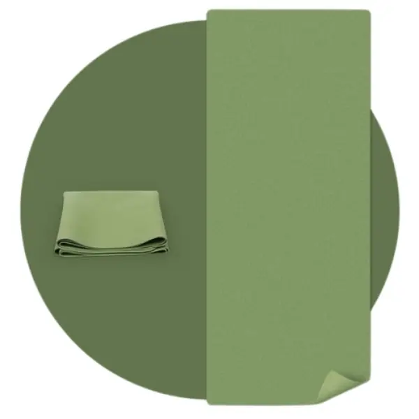
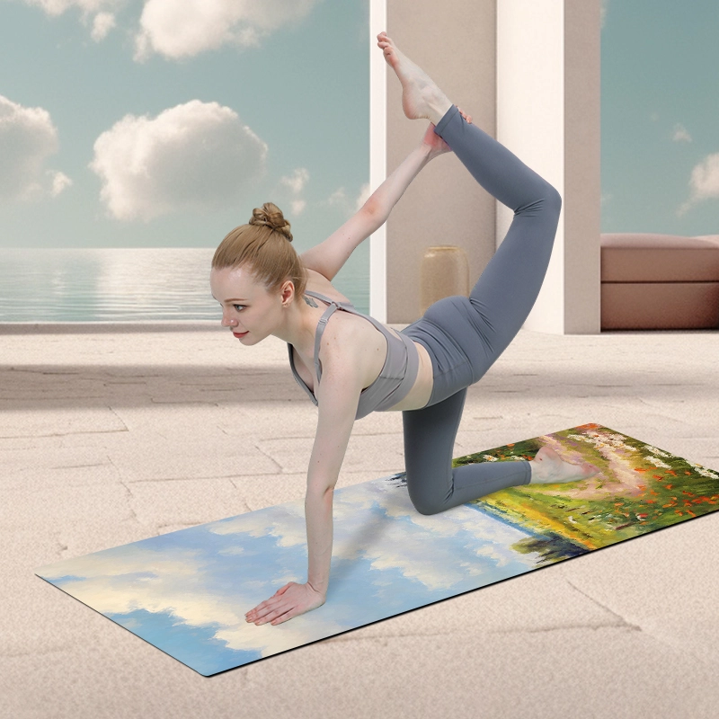
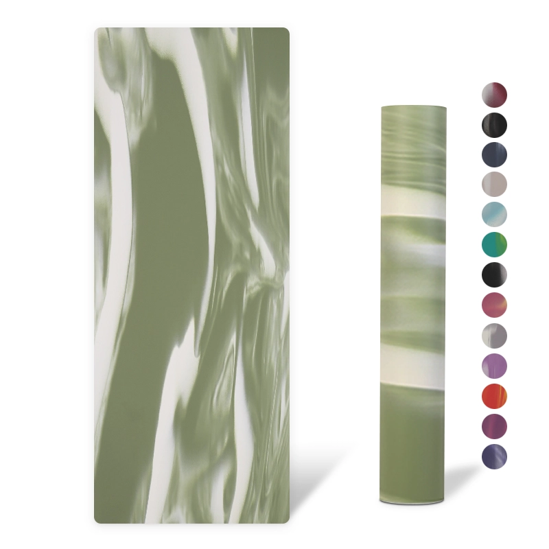

PU Surface antidérapante laminée sur une base en caoutchouc naturel, 183x68cm, 4-5mm, épaisseur personnalisable. La spécification d'adhérence haut de gamme pour le yoga chaud et l'utilisation en studio.
| Matériau | PU+Caoutchouc |
|---|---|
| Taille | 183x68cm |
| Épaisseur | 4-5mm, personnalisable |
| Quantité minimale de commande | 100 pièces |
| Couleurs | Plusieurs couleurs ou sur mesure |
| Fonctionnalité | Antidérapant, respectueux de l'environnement, résistant à l'usure |
| Logo | Personnalisation disponible |
| Conformité | ROHS / CE / ISO 9001 / BSCI / REACH |
| Emballage | Sachet en polyéthylène + carton ou sur mesure |
Une couche supérieure en PU collée sur une base en caoutchouc naturel : cette association garantit une excellente absorption de la transpiration et une pratique stable et antidérapante. Il s’agit du tapis phare de la plupart des studios et des gammes haut de gamme disponibles en magasin ; il est disponible avec des finitions imprimées, gaufrées ou unies.
Prise en charge complète des services OEM/ODM : matériau, dimensions, épaisseur, couleur, bicolore, impression de logo, gaufrage et emballage. Échantillons physiques prêts en 7 jours selon vos spécifications.
Conçu pour le yoga chaud, les studios de vinyasa, les gammes haut de gamme destinées à la vente au détail et l'aménagement d'hôtels ou de salles de sport.

PU+Caoutchouc · 183x68cm

PU mat + caoutchouc · 185cm*68cm*0.15cm

PU+Caoutchouc · 185x68cm

PU+Caoutchouc · 185x68cm
Demandez dès aujourd'hui un devis personnalisé et des échantillons gratuits.
Contactez notre équipe